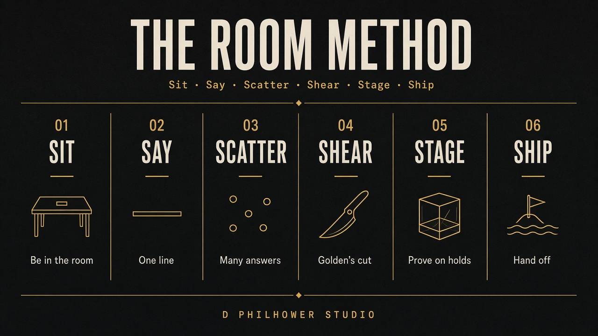

Studio process
The Room Method
An original graphic + web process for hospitality. Informed by Double Diamond, design thinking, identity practice, and William Golden’s reduction — fused into one path that fits restaurants, print, and the web as one system.

What we studied
Not a borrowed deck
Double Diamond maps problem and solution. Design thinking centers users. Identity books stop at guidelines. Golden cut until one idea remained. This studio’s habit starts at the table. The Room Method maps hospitality surfaces — table → glass → pack → screen — and requires Shear before anything goes public.
Six stages
Sit → Say → Scatter → Shear → Stage → Ship
Loops are allowed. Stage can send you back to Shear. Ship feedback returns to Stage. Only a new room restarts Sit.
Graphic: who holds this, who sees it from the sidewalk. Web: who taps first. Do: meal, walkthrough, stakeholder talk. Exit: raw notes and constraints.
The sentence the window must say. The job the homepage must finish. Cut competitors. Name what we will not design. Exit: one-line brief and a success test.
Twenty thumbnails. Wordmarks, symbols, seals. Three IA sketches. Quantity first. No polishing. Exit: a shortlist of three directions max.
Reduce to geometry. One idea. One color must work. Favicon and window. Kill decoration that does not carry meaning. Exit: locked mark, type, and color.
Menu, window, pack, card, phone — same system. Home → case → contact on real devices. If it breaks on a coaster or a 375px screen, it is not done.
Print files, guidelines, naming. Static and theme build, accessibility check, live URL. Collect holding feedback; loop to Shear or Stage — not to Sit unless the room changed.
Rules
Non-negotiable
Never start in Figma, Illustrator, or codegen without Sit and Say.
Print and web share mark, color, type. Layouts differ. Language does not.
If it needs a paragraph to explain the logo, cut again.
Test on glass, paper, and phone — not only on a moodboard.
In the portfolio
The method on every full kit
Eleven restaurant systems run the same path — including in-house Bville, Ember, Casa Forno, the gold-leaf Aurea kit, Juniper Bar, Kiln Fired, and the coastal, cantina, roast, meze, and ramen rooms.
Let’s sit down
Invite us to the restaurant. We Sit and Say before we Scatter. Shear comes before anything goes on glass.
Invite the studio